| 日付 | 2015年1月18日（日） |
|---|---|
| 山域 | 房総 |
| メンバー | 家族（妻、長女・3歳、長男・1歳） |
| 山行形態 | 子連れ日帰り |
| アクセス | 車 |
| ルート (Map) | 花嫁街道入口 (8:58) - (10:02) 経文石 - (10:51) 見晴台 (11:38) - (11:49) 烏場山 - (12:40) 見晴台 - (13:14) 黒滝 - (13:21) はなその広場 (13:28) - (13:39) 花嫁街道入口 |
そろそろどこの山も雪に覆われる時期になってきた。
娘の靴は防水機能が高くないため、薄ら雪が積もっているだけでも歩くのは憚られる。
温暖な気候を求めて、今シーズンも房総の山に足を向ける。
烏場山は花嫁街道と呼ばれる道が整備された、房総でも人気の山である。
駐車場に到着。標高30m。
小さな駐車場だが、側にはトイレがある。
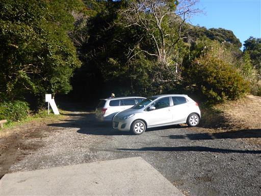
登山口には花嫁街道と書かれた大きな標識がある。
山間の村から海辺の村に花嫁が嫁ぐ際に歩いたことから、こう名付けられたそうだ。
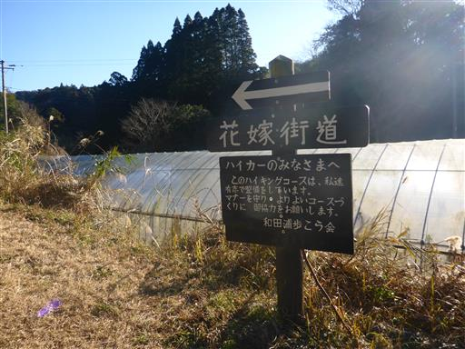
なかなか良い雰囲気の登山道だ。立派な木がたくさん立っている。
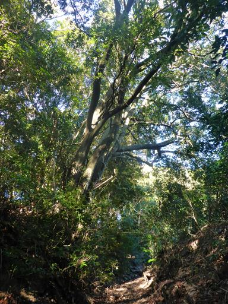
根元だけ立派な太い木だが、途中から貧弱になってしまった杉。
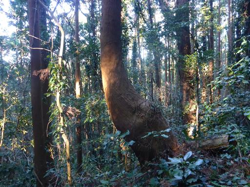
たくさんの木が密に生えている。この辺りは樹林帯が美しい。
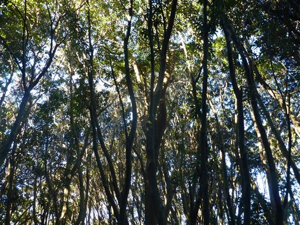
ところどころに標識が立っている。地元の「和田浦歩こう会」が整備しているようだ。

第一展望台に到着。
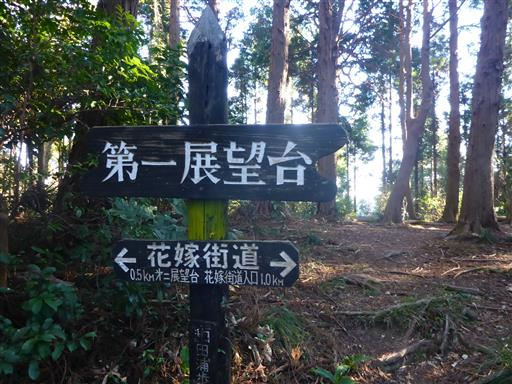
展望台となっているが全く展望がない。木の展望台だろうか？
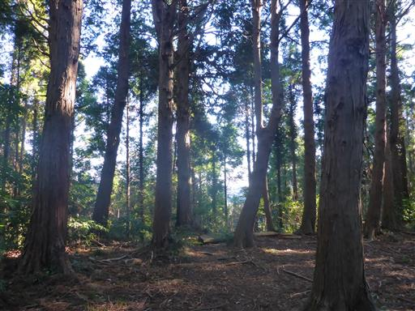
大きくえぐれた登山道に枝が散乱していて歩きにくい。
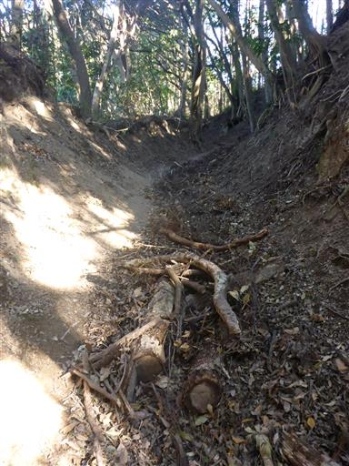
続いて第二展望台に到着。
ここでようやく展望が開ける。真青な海を望むことができる。
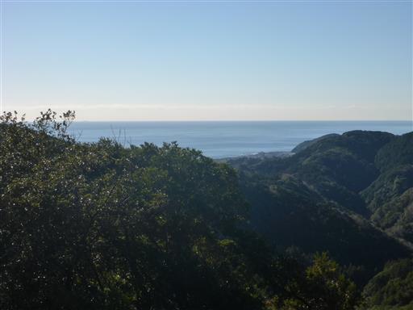
房総で良く見られるマテバシイ林の標識。
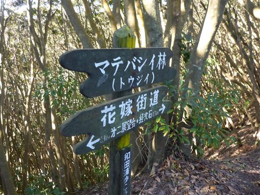
すさまじいマテバシイの密林地帯だ。
ここまで密集して生える木を他に知らない。
葉は付けていないのに、木の幹だけで奥の景色が全て遮られている。
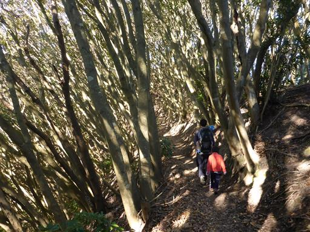
経文石と書かれた標識が立っている。
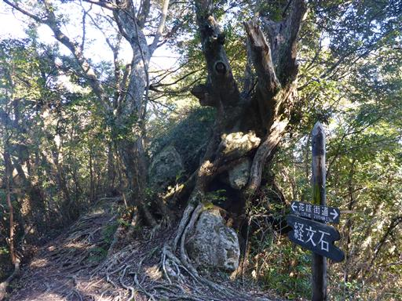
木の根に石が挟まっているが、これが経文石なのだろうか？
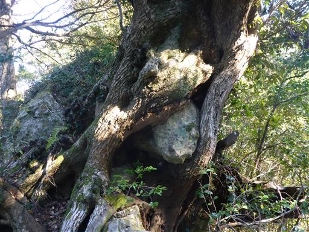
少し展望が開けて、目指す烏場山が見えてきた。

一面ツル植物の葉に覆われた木が立っている。
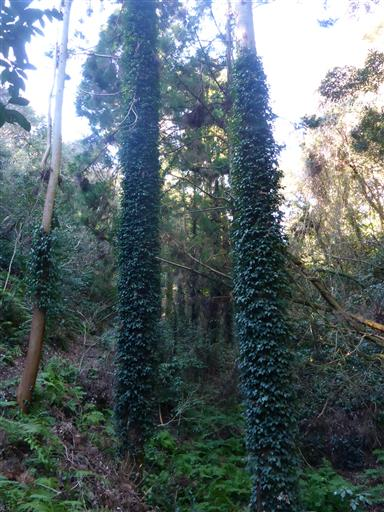
見晴台に到着。ベンチがあって、休憩できるようになっている。
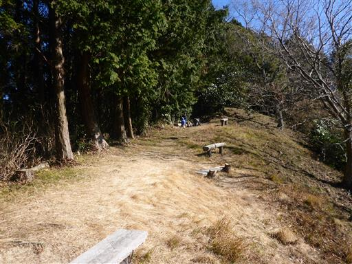
山中なのにトイレまで設置されている。
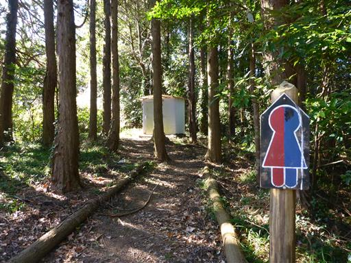
海が見えるなかなか眺めの良い場所だ。
山頂まであともうわずかだが、ここで腰を下ろして昼食をとることにする。
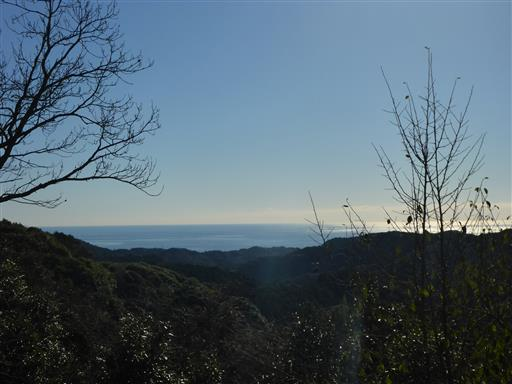
突然娘が悲鳴を上げる。飛んできたバッタが手の甲に止まったようだ。
もう寒いのでかなり弱っていて、あまり動かない。
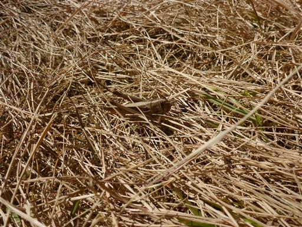
昼食をとったら、山頂に向けて出発。間もなく第三展望台に到着する。
足元に山間の集落が見える。この集落の花嫁が海の方へ歩いたのだろうか？
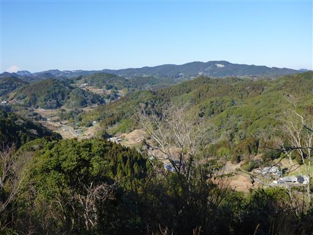
山の向こうには何と富士山の頭が見えている。
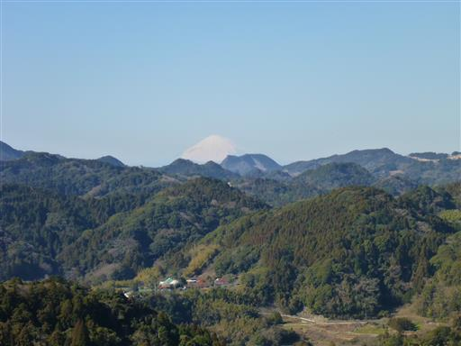
右に左にたくさん枝を出した不思議な形の木。
まるでタコの足のようだ。
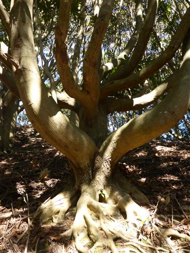
烏場山に到着する。標高267m。
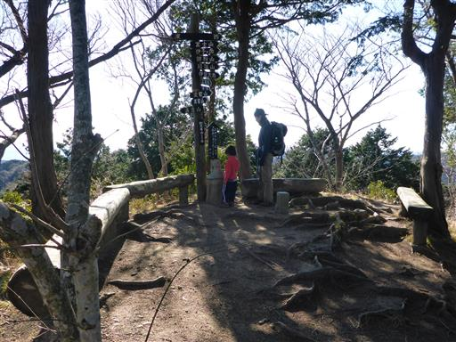
山がどの方向に見えるか書かれた標識がたくさんあるのだが、
さほど展望の良くない山頂だ。昼食は先ほどの見晴台でとっておいて正解だった。
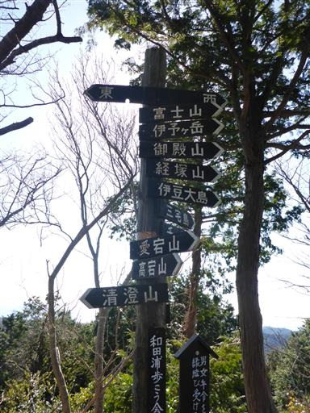
山頂には可愛らしい花嫁の石像が置かれている。
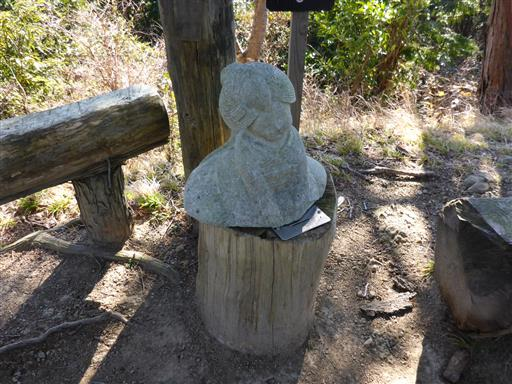
下山は花婿コースを歩く。
花婿が歩いた訳ではなく、花嫁コースがあるため、恐らく後付された名前だろう。
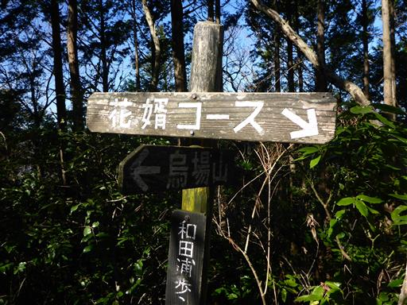
左方向に大きく枝を伸ばす大木。この山域は立派な木が多い。
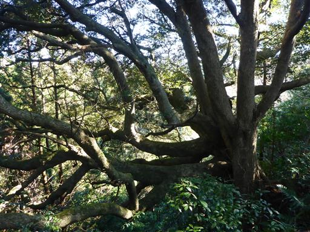
旧烏場展望台に到着する。
ここからも太平洋が良く見える。太陽の光を反射していて美しい。

次は見晴台に到着。
展望台やら見晴台やら、色々な名前の場所があってややこしい。
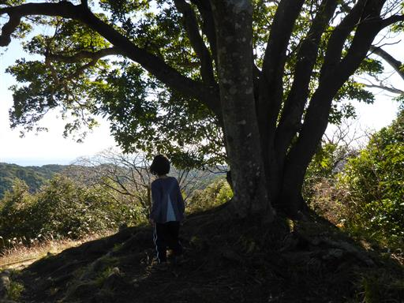
緩やかな傾斜の道が終わって、階段の下りになる。

辺りは、相変わらず樹林帯がきれいだ。
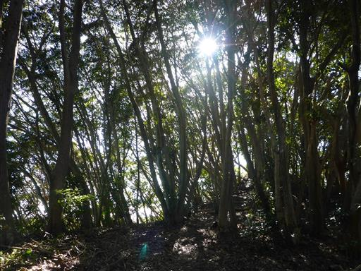
金毘羅山に到着。山頂の少し下に石祠が置かれている。
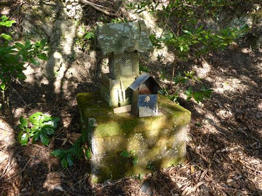
分岐点から黒滝に向かう階段を降りる。
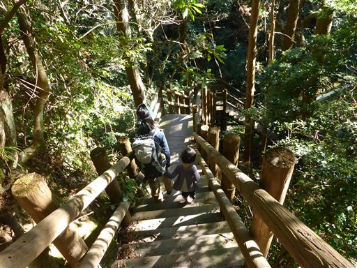
最近整備されたのか、比較的新しそうな東屋が建っている。
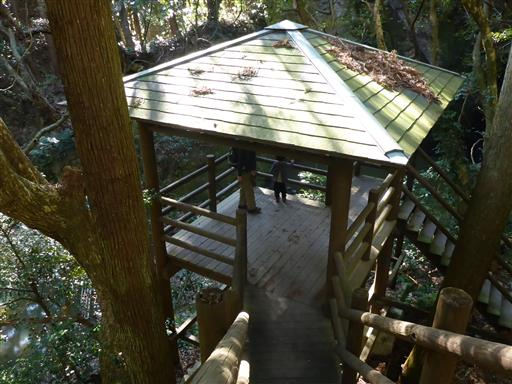
東屋から黒滝を望む。
房総の滝ということで全く期待していなかったが、思ったよりずっと大きい滝だ。
しかし水が汚い。こんな濁った滝壺は初めて見た。
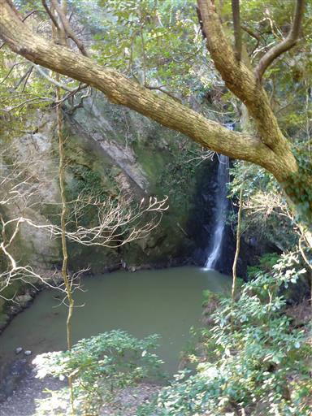
近くには石像が祀られている。
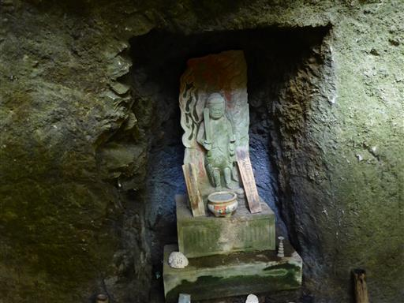
下に降りて滝を望む。周りは岩壁に囲まれている。
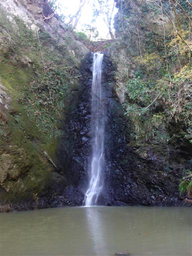
簡易の木の橋を渡る。水が汚いので落ちたくないところだ。
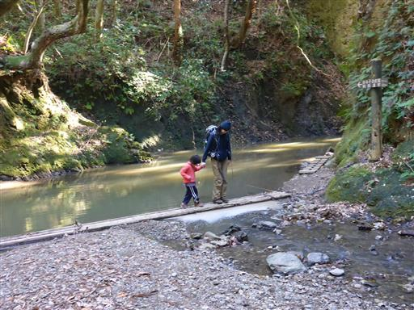
ここからは渓谷歩き。崖に囲まれた雰囲気の良い場所だ。
距離が短いのと、水が汚いのが欠点。
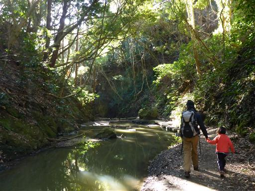
石を飛んで川を渡る。娘は無理と言うので、ここは抱っこだ。
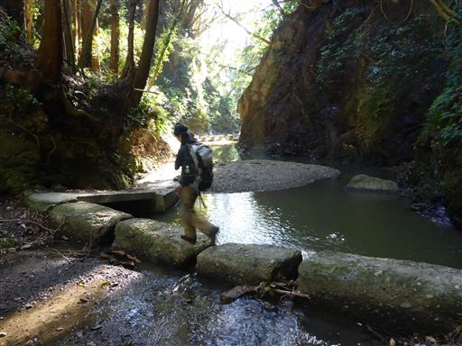
黒滝コースを終えたところに「はなその広場」がある。
1つだけポツリと遊具がある。ここで少し遊ぶことにする。
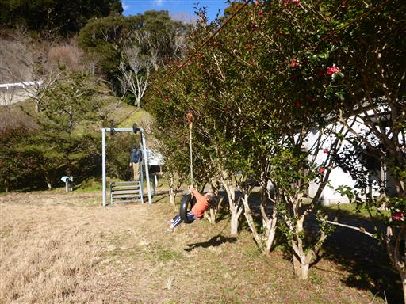
コアラのベンチ。可愛いのか不気味なのかよく分からない。
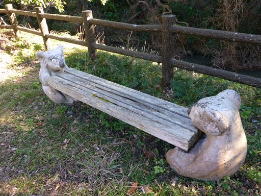
あとは、わずかの車道歩きで駐車場だ。所々で養蜂場の巣箱が見られる。
美しい樹林帯に包まれた、手頃なハイキングコースだった。
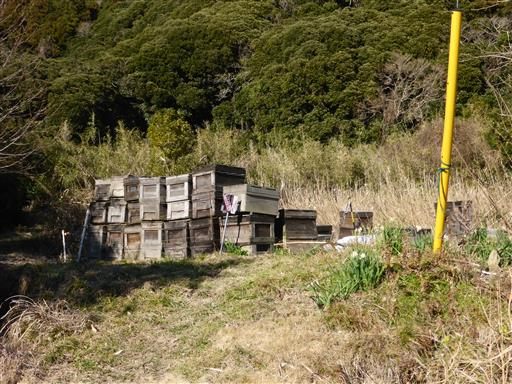